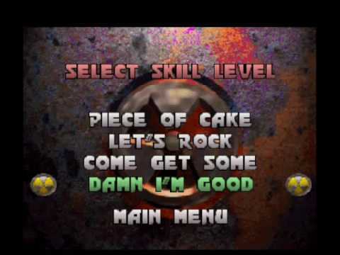
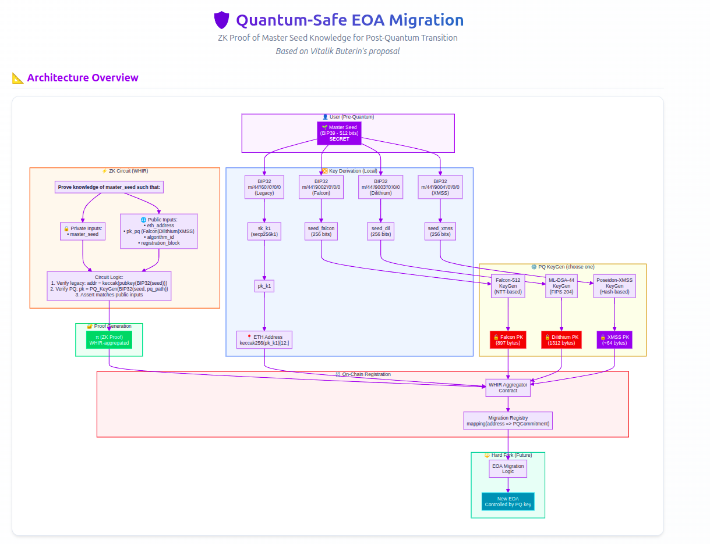
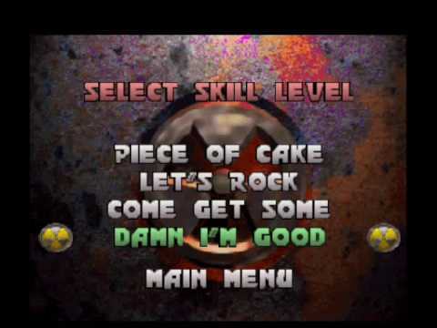
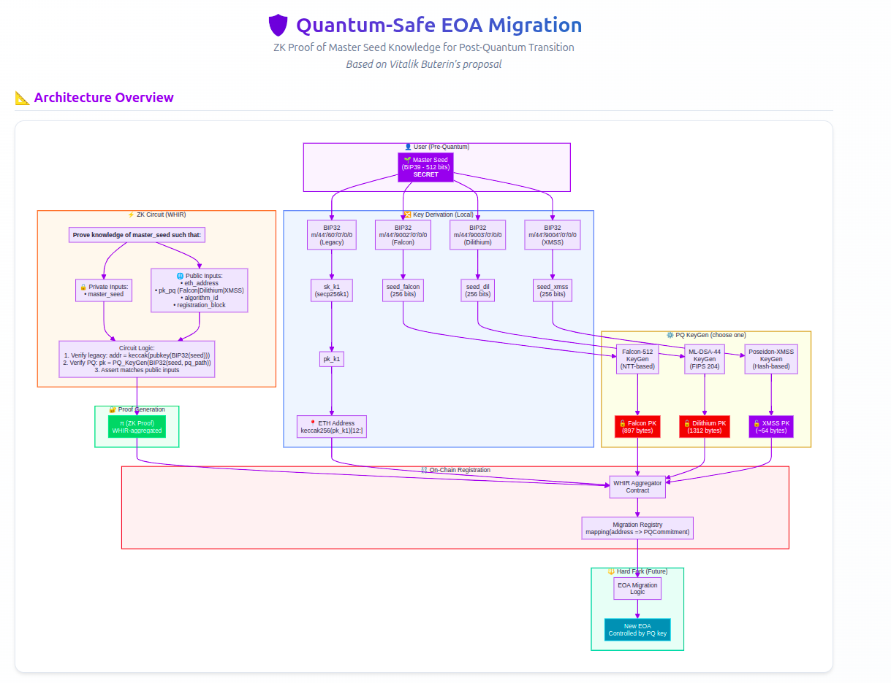

Scenarios for Post-Quantum Migrations
2025 Dec 17
See all posts
Scenarios for Post-Quantum Migrations
A meme in the cryptographic domain is "Cryptography is easy, Key
Management is hard". While current efforts to bring Ethereum to the
Post-Quantum Era are underway, deployment will still take years. This
post does not venture to make any bet or commitment on which scenario is
most probable for which deadline. But first, let's examine how to handle
a risk.
Basically, risk resource allocation follows:
risk_materialization_cost × risk_probability = resource_allocation
Looking at today's risk management in the Ethereum ecosystem, it
seems to be handled more as a binary ‘0/1' problem, either quantum
computers are a threat or they aren't. There's no widely accepted model
to extrapolate quantum computing progress, making probabilistic planning
difficult. What we can do is prepare for multiple scenarios. First let's
have a look at the exposure:
| Category |
Description |
Estimated Value |
Vulnerability Level |
Notes |
| ETH in EOAs (exposed pubkey) |
Any EOA that has ever sent a transaction |
$140-175B |
🔴 Critical |
~40-50M ETH, pubkey on-chain |
| Staked ETH (validators) |
32 ETH × ~1M validators |
~$110B |
🔴 Critical |
BLS keys compromised, consensus at risk |
| DeFi Protocol Treasuries |
DAO treasuries in EOAs/multisigs |
$5-15B |
🔴 Critical |
Many use EOA signers |
| Bridge Hot Wallets |
Cross-chain bridge reserves |
$8-12B |
🔴 Critical |
Multisigs with EOA keys |
| CEX Hot Wallets |
Exchange operational wallets |
$15-25B |
🔴 Critical |
High-value targets |
| CEX Cold Storage |
Offline/MPC storage |
$50-100B |
🟡 Medium |
May have airgapped keys |
| ERC-20 Tokens in EOAs |
All tokens in vulnerable addresses |
$80-120B |
🔴 Critical |
Multiplier effect |
| Centralized Stablecoins (USDT/USDC/etc.) |
Centralized |
$120B+ |
🟢 Low (USDT/USDC) |
Centralized can freeze |
| NFTs (major collections) |
BAYC, Punks, Art Blocks, etc. |
$2-5B |
🔴 Critical |
Sell them now, they are already dead |
| L2 Sequencer Keys |
Rollup operational keys |
N/A (control risk) |
🔴 Critical |
Can censor/manipulate L2 |
| ENS Names |
Valuable domain names |
$0.5-1B |
🔴 Critical |
In EOAs |
This post explores various scenarios of key migration in the face of
the Quantum Computing Nuke.

(Now pick your difficulty level)
The Current Efforts
The Ethereum community is actively working on post-quantum migration
strategies. The emerging consensus points toward a layered approach:
aggregating PQ signatures into Post-Quantum SNARKs (specifically STARK
or WHIR-based proofs) to manage the significant size overhead of PQ
signatures on-chain.
Several concrete implementations already exist. Post-Quantum
Smart Accounts based on ERC-4337 have been developed, notably
hash-based schemes like XMSS with ZK-friendly Poseidon hashing and
ZKNOX's implementation supporting Falcon, Dilithium (ML-DSA). These
allow users to transition to quantum-resistant security today, without
waiting for protocol-level changes.
The concept of ZK-based key migration for frozen
accounts has been described
by Vitalik Buterin. The mechanism is elegant: users don't need to
pre-register anything. They simply keep their BIP39 seed phrase. After a
freeze of legacy EOAs, recovery works by submitting a ZK proof
demonstrating knowledge of the master seed that generated both the
legacy ETH address AND a new PQ public key. The proof links the old
identity to the new key without revealing the secret. To date, however,
no production implementation of this recovery mechanism exists.
The key derivation architecture would extend BIP32/BIP39 with new
derivation paths for each PQ algorithm, using the same master seed to
derive both legacy secp256k1 keys and new PQ keys (Falcon at
m/44'/9002'/..., Dilithium at m/44'/9003'/...,
etc.). The following diagram illustrates the foresight mechanism,
adapted to the ZKNOX Post Quantum key derivation scheme.

(ZK Based Key Migration)
Piece of Cake
(Easy Mode): The Smooth Migration

(The world is cute when everything goes
fine)
In this optimistic scenario, the cryptographic community provides
sufficient warning — perhaps a decade or more — before cryptographically
relevant quantum computers (CRQCs) emerge. Users, DeFi protocols, and
infrastructure providers have ample time to migrate.
What happens:
PQ signature verification is added to the EVM via new precompiles
(EIPs for ML-DSA, Falcon, and hash-based signatures)
Wallet vendors roll out firmware updates supporting PQ key
derivation from existing seed phrases
Users upgrade their EOAs to smart accounts with PQ verification,
or the protocol itself evolves to support PQ EOAs natively
DeFi protocols update their signature verification logic
L2s and bridges implement PQ-compatible verification
The timeline is comfortable: perhaps 2-3 years for
protocol changes, another 2-3 years for ecosystem adoption, all
completed well before any quantum threat materializes.
User experience: Seamless. A wallet notification
prompts upgrade, user confirms, and their account is now
quantum-resistant, still controlled by the same seed phrase.
This is the scenario everyone hopes for. It requires no emergency
measures, no frozen funds, no losses. The migration diagram for this
path is straightforward: a simple upgrade flow from legacy EOA to
PQ-secured account.
Let's Rock
(Normal Mode): Quantum Computing Accelerates
(Let's be cautious)
In this scenario, quantum computing progress outpaces initial
estimates, but the community responds in time. Strong signals, perhaps a
demonstration of Shor's algorithm on increasingly large key sizes,
trigger coordinated action.
What happens:
Most sophisticated users (whales, institutions, active DeFi
participants) migrate to PQ accounts before the threat becomes
imminent
Major DeFi protocols prioritize PQ compatibility
The community, seeing clear warning signs, achieves rough
consensus on an EOA freeze date
A hard fork freezes legacy secp256k1-based EOAs, particularly
those that have been inactive (no recent transactions exposing their
public key are safer, but frozen as a precaution)
Post-freeze recovery:
The ZK recovery mechanism activates. Users with frozen accounts can
recover by generating a WHIR-aggregated proof locally (using their seed
phrase) and submitting it alongside their new PQ public key. The proof
demonstrates: "I know the seed that generated this frozen address, and
here's my new PQ key derived from the same seed."
Wallet vendor support: Hardware and software wallet
vendors ship "recovery mode" firmware. The user connects their device,
enters their seed phrase (or it's already stored securely), and the
wallet generates the witness data for the ZK prover. The UX could be as
simple as: "Your account was frozen for quantum security. Click here
to recover with your new quantum-resistant key."
Economic assumption: The cost of mounting a Shor
attack (requiring a fault-tolerant quantum computer with thousands of
logical qubits) exceeds the value of most individual wallets. Attackers
would target the largest honeypots first, giving smaller holders time to
recover.
Losses: Minimal. Some long-lost wallets (Satoshi-era
ETH, forgotten accounts) remain frozen forever, their owners either lost
their seeds or are unreachable. But active economic participants recover
successfully.
Come
Get Some Losses (Hard Mode): Wow, Didn't See It That Fast

(That was close)
In this scenario, the transition is underway but incomplete when
quantum capabilities arrive. The freeze hasn't happened yet. Some major
actors are caught exposed.
What happens: - A cryptographically relevant quantum
computer is demonstrated or credibly rumored - Panic ensues;
sophisticated attackers (nation-states, well-funded groups) begin
targeting high-value addresses - The public keys of any address that has
ever sent a transaction are now vulnerable — attackers can derive
private keys from exposed public keys
Immediate damage assessment:
| Category |
Estimated Exposure |
| ETH in EOAs with exposed pubkeys |
~70% of all EOA-held ETH |
| Top 100 non-contract addresses |
~$10-15B (varies with price) |
| DeFi protocol treasuries (EOA-held) |
~$2-5B |
| Bridge hot wallets |
~$1-3B |
| CEX hot wallets |
~$5-10B |
Total potential loss: $20-40B+ in immediate
exposure, assuming current (2024-2025) valuations. The actual
extracted value would depend on attacker capacity and speed.
Emergency response: - Centralized
stablecoins freeze: Tether (USDT) and Circle (USDC) have admin
keys capable of blacklisting addresses. They freeze all movement pending
resolution. This contains ~$100B+ in value but requires trusting
centralized actors. - CEX circuit breakers: Major
exchanges halt withdrawals and deposits. - Rollback
debate: The community faces an agonizing choice, roll back the
chain to before the attacks, losing potentially days or weeks of
legitimate transactions, or accept the losses and move forward.
The rollback calculus: A rollback is technically
possible but socially catastrophic. It would:
Destroy confidence in Ethereum's immutability
Create legal chaos (which transactions are "real"?)
Set a precedent for future interventions
Potentially split the community (those who lost funds vs. those
who benefited from legitimate post-attack transactions)
The 2016 DAO hack rollback worked because the community was smaller
and the damage was contained. A quantum attack could be far more
distributed and harder to cleanly separate from legitimate activity.
Likely outcome: A messy compromise, partial freezes,
emergency hard fork to disable secp256k1, rapid deployment of ZK
recovery, and significant but not total losses. Some whales get rekt.
Trust is damaged but Ethereum survives.
Damn I'm (not)
Good (Nightmare Mode): We Are So Rekt

(REKT)
In this scenario, quantum computing is available tomorrow. No
warning. No preparation complete. Shor's algorithm runs on a machine
that can break secp256k1 in hours or days.
Immediate impact:
Every EOA with an exposed public key is vulnerable
Every validator's BLS signature is compromised (BLS12-381 also
falls to quantum attacks)
Consensus itself is at risk
Emergency possibilities:
1. Centralized Currency Freeze
USDT, USDC, and other centralized stablecoins can freeze all
transfers via admin functions. These issuers would wait until a recovery
mechanism is designed, then selectively unfreeze based on proof of
legitimate ownership.
2. Naive Consensus Fallback
A hastily-deployed consensus mechanism where each validator signs
using a PQ signature (e.g., Dilithium) before BLS aggregation could
theoretically work, but the performance impact would be severe:
Current BLS aggregation: - Signature size: 96 bytes
(aggregated from all attesters)
- Verification: Single pairing check, ~1-2ms
Naive PQ replacement (FALCON512):
Signature size: 666 bytes × ~300,000 validators = ~200Mo
per epoch just for attestations
Verification: Each signature verified individually, ~0.5ms ×
300,000 = ~150 seconds per epoch
This is obviously unworkable for normal operation. The network would
grind to a halt or require massive validator set reduction (e.g., only
1,000 validators, re-introducing centralization), or some recursion.
A more realistic emergency consensus:
Dramatically reduce validator count to a trusted emergency
set
Accept centralization as temporary survival mode
Block times increase from 12 seconds to perhaps minutes
3. ERC-4337 Account
Abstraction Refuge
Users with existing 4337 smart accounts using PQ verification (like
ZKNOX accounts) would be the only ones with secure, self-custodial
access. These accounts become lifeboats. However, if the underlying L1
consensus is compromised, even these accounts are only as secure as the
chain they're on.
4. L2 Evacuation
If L2s can quickly deploy PQ verification and their sequencers aren't
compromised, they might serve as temporary safe havens. Assets could be
bridged to L2s that implement emergency PQ measures faster than L1 can
hard fork.
Realistic outcome: Catastrophic even if not
terminal. Ethereum would survive in a very diminished, emergency form.
Massive value destruction occurs. Recovery takes months or years. The
"immutable ledger" narrative is permanently damaged, but the technology
eventually rebuilds with proper quantum resistance.
Conclusion

(We need a red button .)
A kill switch is required, not to use, hopefully never to use, but to
have ready as a mitigation against the nightmare scenario. This
means:
Implemented ZK recovery circuits, tested and
audited, ready for emergency deployment
WHIR aggregation infrastructure that can handle
mass recovery operations
Wallet vendor integration so recovery UX is
ready, not improvised
Emergency consensus specifications that trade
decentralization for survival
Coordination mechanisms between major
stakeholders (client teams, large stakers, centralized issuers) for
rapid response
The cost of building this infrastructure is trivial compared to the
potential losses. Even if the probability of a nightmare scenario is
low, the expected value calculation clearly favors preparation:
$4Mpreparation ≪ 0.1% × $40Bloss = $400Mexpected_loss
The Nuke may never come, or may come so slowly we barely notice the
transition. But if it comes fast, we need to be ready.
Keep your seed phrase safe. It may be your only recovery
path.

(Quantum Apocalypse Clock is ticking)
References
Post-Quantum
Readiness in EdDSA Chains
How
to hard-fork to save most users' funds in a quantum emergency
ZKNOX — Post-Quantum Cryptography for Ethereum
Scenarios for Post-Quantum Migrations
2025 Dec 17 See all postsA meme in the cryptographic domain is "Cryptography is easy, Key Management is hard". While current efforts to bring Ethereum to the Post-Quantum Era are underway, deployment will still take years. This post does not venture to make any bet or commitment on which scenario is most probable for which deadline. But first, let's examine how to handle a risk.
Basically, risk resource allocation follows:
risk_materialization_cost × risk_probability = resource_allocation
Looking at today's risk management in the Ethereum ecosystem, it seems to be handled more as a binary ‘0/1' problem, either quantum computers are a threat or they aren't. There's no widely accepted model to extrapolate quantum computing progress, making probabilistic planning difficult. What we can do is prepare for multiple scenarios. First let's have a look at the exposure:
This post explores various scenarios of key migration in the face of the Quantum Computing Nuke.

(Now pick your difficulty level)
The Current Efforts
The Ethereum community is actively working on post-quantum migration strategies. The emerging consensus points toward a layered approach: aggregating PQ signatures into Post-Quantum SNARKs (specifically STARK or WHIR-based proofs) to manage the significant size overhead of PQ signatures on-chain.
Several concrete implementations already exist. Post-Quantum Smart Accounts based on ERC-4337 have been developed, notably hash-based schemes like XMSS with ZK-friendly Poseidon hashing and ZKNOX's implementation supporting Falcon, Dilithium (ML-DSA). These allow users to transition to quantum-resistant security today, without waiting for protocol-level changes.
The concept of ZK-based key migration for frozen accounts has been described by Vitalik Buterin. The mechanism is elegant: users don't need to pre-register anything. They simply keep their BIP39 seed phrase. After a freeze of legacy EOAs, recovery works by submitting a ZK proof demonstrating knowledge of the master seed that generated both the legacy ETH address AND a new PQ public key. The proof links the old identity to the new key without revealing the secret. To date, however, no production implementation of this recovery mechanism exists.
The key derivation architecture would extend BIP32/BIP39 with new derivation paths for each PQ algorithm, using the same master seed to derive both legacy secp256k1 keys and new PQ keys (Falcon at
m/44'/9002'/..., Dilithium atm/44'/9003'/..., etc.). The following diagram illustrates the foresight mechanism, adapted to the ZKNOX Post Quantum key derivation scheme.
(ZK Based Key Migration)
Piece of Cake (Easy Mode): The Smooth Migration
(The world is cute when everything goes fine)
In this optimistic scenario, the cryptographic community provides sufficient warning — perhaps a decade or more — before cryptographically relevant quantum computers (CRQCs) emerge. Users, DeFi protocols, and infrastructure providers have ample time to migrate.
What happens:
PQ signature verification is added to the EVM via new precompiles (EIPs for ML-DSA, Falcon, and hash-based signatures)
Wallet vendors roll out firmware updates supporting PQ key derivation from existing seed phrases
Users upgrade their EOAs to smart accounts with PQ verification, or the protocol itself evolves to support PQ EOAs natively
DeFi protocols update their signature verification logic
L2s and bridges implement PQ-compatible verification
The timeline is comfortable: perhaps 2-3 years for protocol changes, another 2-3 years for ecosystem adoption, all completed well before any quantum threat materializes.
User experience: Seamless. A wallet notification prompts upgrade, user confirms, and their account is now quantum-resistant, still controlled by the same seed phrase.
This is the scenario everyone hopes for. It requires no emergency measures, no frozen funds, no losses. The migration diagram for this path is straightforward: a simple upgrade flow from legacy EOA to PQ-secured account.
Let's Rock (Normal Mode): Quantum Computing Accelerates
(Let's be cautious)
In this scenario, quantum computing progress outpaces initial estimates, but the community responds in time. Strong signals, perhaps a demonstration of Shor's algorithm on increasingly large key sizes, trigger coordinated action.
What happens:
Most sophisticated users (whales, institutions, active DeFi participants) migrate to PQ accounts before the threat becomes imminent
Major DeFi protocols prioritize PQ compatibility
The community, seeing clear warning signs, achieves rough consensus on an EOA freeze date
A hard fork freezes legacy secp256k1-based EOAs, particularly those that have been inactive (no recent transactions exposing their public key are safer, but frozen as a precaution)
Post-freeze recovery:
The ZK recovery mechanism activates. Users with frozen accounts can recover by generating a WHIR-aggregated proof locally (using their seed phrase) and submitting it alongside their new PQ public key. The proof demonstrates: "I know the seed that generated this frozen address, and here's my new PQ key derived from the same seed."
Wallet vendor support: Hardware and software wallet vendors ship "recovery mode" firmware. The user connects their device, enters their seed phrase (or it's already stored securely), and the wallet generates the witness data for the ZK prover. The UX could be as simple as: "Your account was frozen for quantum security. Click here to recover with your new quantum-resistant key."
Economic assumption: The cost of mounting a Shor attack (requiring a fault-tolerant quantum computer with thousands of logical qubits) exceeds the value of most individual wallets. Attackers would target the largest honeypots first, giving smaller holders time to recover.
Losses: Minimal. Some long-lost wallets (Satoshi-era ETH, forgotten accounts) remain frozen forever, their owners either lost their seeds or are unreachable. But active economic participants recover successfully.
Come Get Some Losses (Hard Mode): Wow, Didn't See It That Fast
(That was close)
In this scenario, the transition is underway but incomplete when quantum capabilities arrive. The freeze hasn't happened yet. Some major actors are caught exposed.
What happens: - A cryptographically relevant quantum computer is demonstrated or credibly rumored - Panic ensues; sophisticated attackers (nation-states, well-funded groups) begin targeting high-value addresses - The public keys of any address that has ever sent a transaction are now vulnerable — attackers can derive private keys from exposed public keys
Immediate damage assessment:
Total potential loss: $20-40B+ in immediate exposure, assuming current (2024-2025) valuations. The actual extracted value would depend on attacker capacity and speed.
Emergency response: - Centralized stablecoins freeze: Tether (USDT) and Circle (USDC) have admin keys capable of blacklisting addresses. They freeze all movement pending resolution. This contains ~$100B+ in value but requires trusting centralized actors. - CEX circuit breakers: Major exchanges halt withdrawals and deposits. - Rollback debate: The community faces an agonizing choice, roll back the chain to before the attacks, losing potentially days or weeks of legitimate transactions, or accept the losses and move forward.
The rollback calculus: A rollback is technically possible but socially catastrophic. It would:
Destroy confidence in Ethereum's immutability
Create legal chaos (which transactions are "real"?)
Set a precedent for future interventions
Potentially split the community (those who lost funds vs. those who benefited from legitimate post-attack transactions)
The 2016 DAO hack rollback worked because the community was smaller and the damage was contained. A quantum attack could be far more distributed and harder to cleanly separate from legitimate activity.
Likely outcome: A messy compromise, partial freezes, emergency hard fork to disable secp256k1, rapid deployment of ZK recovery, and significant but not total losses. Some whales get rekt. Trust is damaged but Ethereum survives.
Damn I'm (not) Good (Nightmare Mode): We Are So Rekt
(REKT)
In this scenario, quantum computing is available tomorrow. No warning. No preparation complete. Shor's algorithm runs on a machine that can break secp256k1 in hours or days.
Immediate impact:
Every EOA with an exposed public key is vulnerable
Every validator's BLS signature is compromised (BLS12-381 also falls to quantum attacks)
Consensus itself is at risk
Emergency possibilities:
1. Centralized Currency Freeze
USDT, USDC, and other centralized stablecoins can freeze all transfers via admin functions. These issuers would wait until a recovery mechanism is designed, then selectively unfreeze based on proof of legitimate ownership.
2. Naive Consensus Fallback
A hastily-deployed consensus mechanism where each validator signs using a PQ signature (e.g., Dilithium) before BLS aggregation could theoretically work, but the performance impact would be severe:
Current BLS aggregation: - Signature size: 96 bytes (aggregated from all attesters)
Naive PQ replacement (FALCON512):
Signature size: 666 bytes × ~300,000 validators = ~200Mo per epoch just for attestations
Verification: Each signature verified individually, ~0.5ms × 300,000 = ~150 seconds per epoch
This is obviously unworkable for normal operation. The network would grind to a halt or require massive validator set reduction (e.g., only 1,000 validators, re-introducing centralization), or some recursion.
A more realistic emergency consensus:
Dramatically reduce validator count to a trusted emergency set
Accept centralization as temporary survival mode
Block times increase from 12 seconds to perhaps minutes
3. ERC-4337 Account Abstraction Refuge
Users with existing 4337 smart accounts using PQ verification (like ZKNOX accounts) would be the only ones with secure, self-custodial access. These accounts become lifeboats. However, if the underlying L1 consensus is compromised, even these accounts are only as secure as the chain they're on.
4. L2 Evacuation
If L2s can quickly deploy PQ verification and their sequencers aren't compromised, they might serve as temporary safe havens. Assets could be bridged to L2s that implement emergency PQ measures faster than L1 can hard fork.
Realistic outcome: Catastrophic even if not terminal. Ethereum would survive in a very diminished, emergency form. Massive value destruction occurs. Recovery takes months or years. The "immutable ledger" narrative is permanently damaged, but the technology eventually rebuilds with proper quantum resistance.
Conclusion
(We need a red button .)
A kill switch is required, not to use, hopefully never to use, but to have ready as a mitigation against the nightmare scenario. This means:
Implemented ZK recovery circuits, tested and audited, ready for emergency deployment
WHIR aggregation infrastructure that can handle mass recovery operations
Wallet vendor integration so recovery UX is ready, not improvised
Emergency consensus specifications that trade decentralization for survival
Coordination mechanisms between major stakeholders (client teams, large stakers, centralized issuers) for rapid response
The cost of building this infrastructure is trivial compared to the potential losses. Even if the probability of a nightmare scenario is low, the expected value calculation clearly favors preparation:
$4Mpreparation ≪ 0.1% × $40Bloss = $400Mexpected_loss
The Nuke may never come, or may come so slowly we barely notice the transition. But if it comes fast, we need to be ready.
Keep your seed phrase safe. It may be your only recovery path.
(Quantum Apocalypse Clock is ticking)
References
Post-Quantum Readiness in EdDSA Chains
How to hard-fork to save most users' funds in a quantum emergency
ZKNOX — Post-Quantum Cryptography for Ethereum